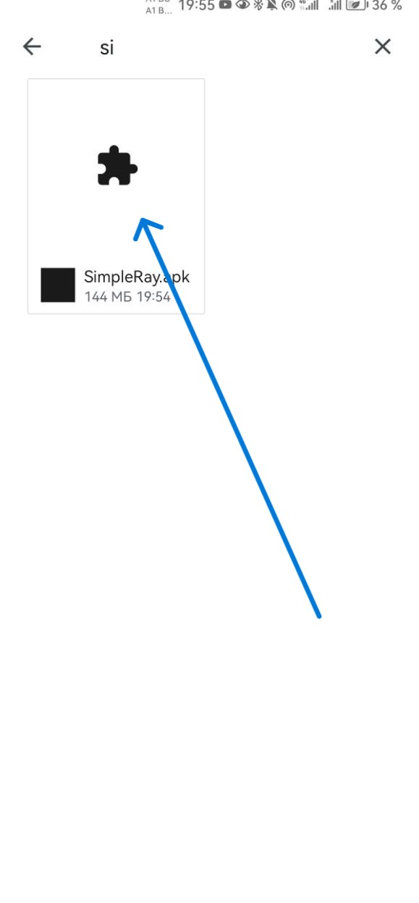
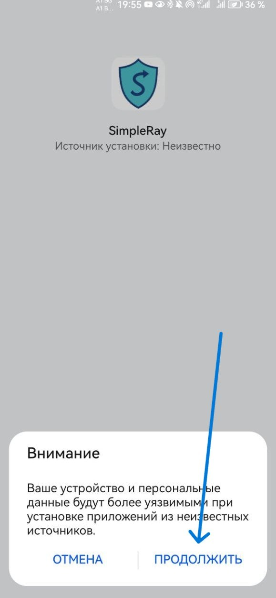
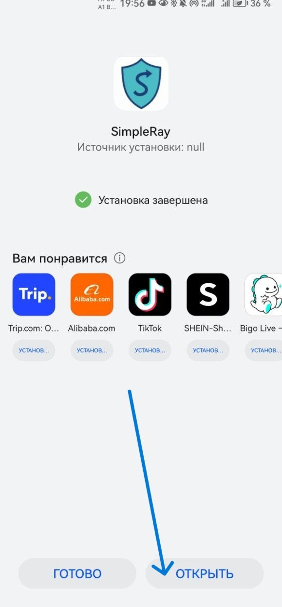
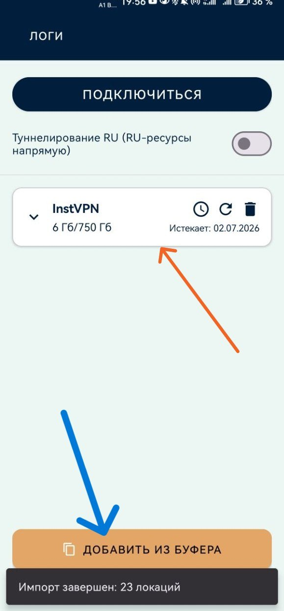
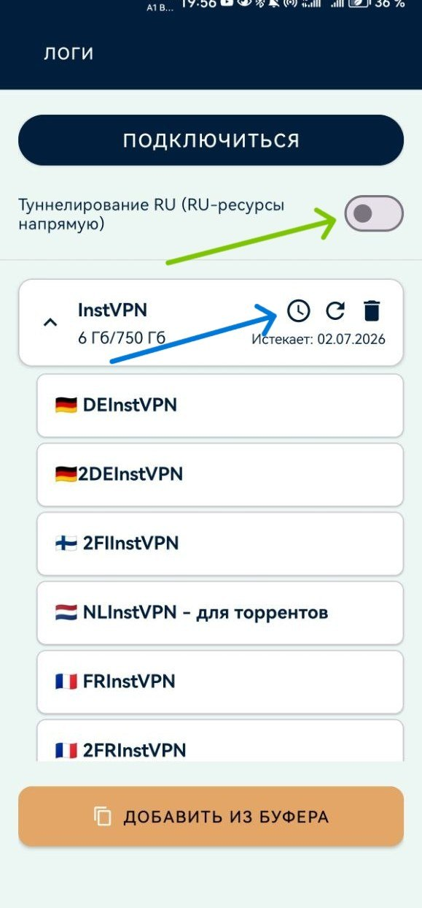
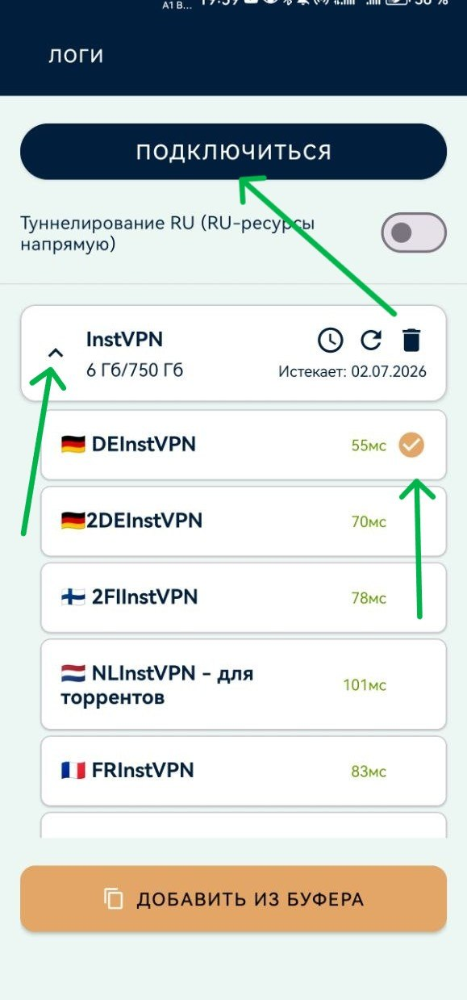

Июнь 2026
Скачайте файл SimpleRay.apk по ссылке и откройте его в папке «Загрузки».

Появится предупреждение об установке из неизвестных источников — нажмите «Продолжить».

Дождитесь сообщения «Установка завершена» и нажмите «Открыть».

Скопируйте вашу ссылку для подключения (нажмите кнопку "⚡️ Подключиться!" в боте) и нажмите «Добавить из буфера». Приложение импортирует все доступные серверы.

Разверните список серверов, нажав на стрелку слева от названия подписки, и нажмите на значок часов ⏱ — приложение измерит пинг до каждого сервера.

Выберите сервер с наименьшим пингом (кроме РФ) и нажмите «Подключиться». Чем меньше значение в мс — тем быстрее соединение.

Если у вас возникли сложности - пожалуйста напишите в техподдержку. Мы поможем.